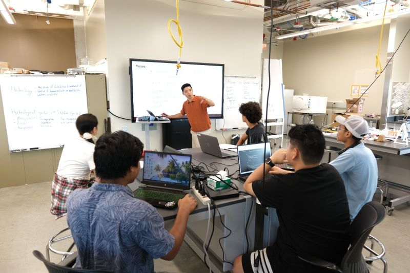
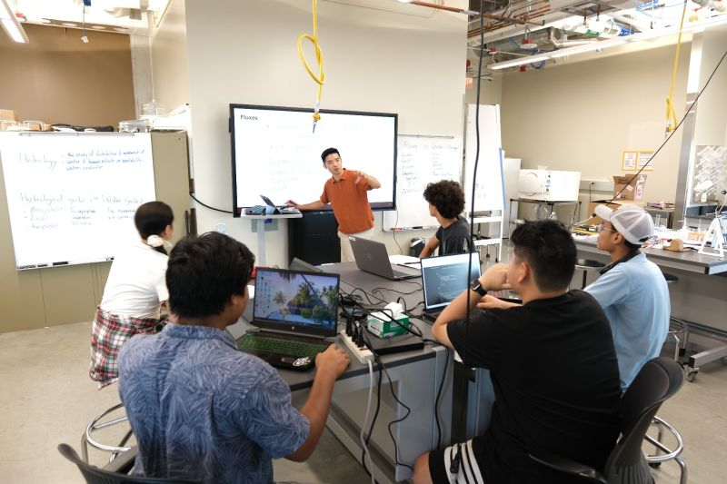

Jipeng Liu
M.S. in Civil Engineering | Remote Sensing & Hydrology Researcher
üìß ibo20@txstate.edu
üì± (737) 354-6141
üìç San Marcos, TX
üéØ Research Objective
Ph.D. program related to Remote Sensing Hydrology
üéì Education
Master of Science in Civil Engineering Expected May 2026
Texas State University, San Marcos, TX
Advisor: Dr. Eunsang Cho | GPA: 3.53/4.00
üî¨ Research Interests
Remote Sensing (RS)
Soil Moisture
Hydro-climate Modeling
üìö Research Projects
Assessing the Accuracy of Airborne LiDAR Snow Depth Estimates in Boreal Forests
2024-2025 | NASA SnowEx 2023 Alaska Campaign
- Analyzed Airborne-LiDAR point cloud data to estimate snow depth under forest canopy conditions
- Integrated manual measurements and environmental variables using R and ArcGIS Pro

UAV-Based Gamma-Ray Signals for Soil Moisture Detection
2025-ongoing | Semi-Arid Rangelands, Texas
- Operated UAV-mounted Medusa MS-1000 gamma sensor
- Processed radiometric data using Gamman software
- Developed soil moisture calibration relationships


Urbanization-Induced Snow-Rain Transition on a Global Scale
2025-ongoing
- Collaborating with PhD researcher from UT Austin
- Studying urbanization-driven precipitation phase shifts using reanalysis and satellite data
üé§ Conference Presentations
AGU 2025 Annual Meeting - New Orleans, LA (Upcoming)
Poster: "Exploring the Sensitivity of UAV-Based Gamma-Ray Signals to Soil Moisture in Semi-Arid Rangelands, Texas"
Poster: "Exploring the Sensitivity of UAV-Based Gamma-Ray Signals to Soil Moisture in Semi-Arid Rangelands, Texas"
81st Eastern Snow Conference - Syracuse, NY (June 2025)
Poster: "Assessing the Accuracy and Influencing Factors of Airborne LiDAR Snow Depth Estimates in Boreal Forests"


Poster: "Assessing the Accuracy and Influencing Factors of Airborne LiDAR Snow Depth Estimates in Boreal Forests"
TXST STEM Conference - San Marcos, TX (March 2025)
Poster: "Evaluating Airborne LiDAR Snow Depth Measurements in Boreal Forest Environments"


Poster: "Evaluating Airborne LiDAR Snow Depth Measurements in Boreal Forest Environments"
üìù Publications
Liu, J., Cho, E., et al. (2025). "Assessing the Accuracy and Influencing Factors of Airborne LiDAR Snow Depth Estimates in Boreal Forests: Insights from NASA SnowEx 2023 Alaska Campaign." The Cryosphere In Progress
Liu, J., Cho, E. (2025). "Exploring the Sensitivity of UAV-Based Gamma-Ray Signals to Soil Moisture in Semi-Arid Rangelands, Texas." In Preparation
üíº Teaching & Service
Graduate Instructional Assistant
August 2024 - Present | Texas State University
Fluid Mechanics Course
Mentor, DOE STEM Summer Camp
July 2025 | Texas State University
 

President, Chinese Students and Scholars Association
December 2024 - Present | Texas State University
üõ†Ô∏è Technical Skills
R Programming
Google Earth Engine
ArcGIS Pro
ERDAS
Gamman
CloudStation
Certification: FAA Part 107 Remote Pilot Certificate (January 2025)
Languages: English (Fluent), Chinese (Native)
Languages: English (Fluent), Chinese (Native)
üèÜ Professional Membership
American Geophysical Union (AGU) - Member since 2025